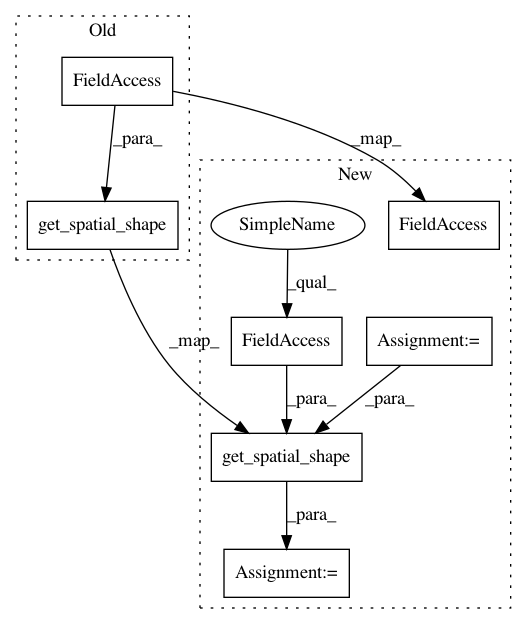

2dc9fb6f38c5d45428387dbeaf5cac89a8b8d3f9,imagenet-classification/models/mobilenet.py,MobileNetV3,__call__,#MobileNetV3#Any#,307
Before Change
// Conv -> Avepool -> Conv
h = self.conv_bn_act(h, int(self.maps1 * self.depth_mul), (1, 1), act="hswish",
name="last-conv-1")
h = F.average_pooling(h, get_spatial_shape(h.shape, self.channel_last))
h = self.conv_act(h, int(self.maps2 * self.depth_mul), (1, 1), act="hswish",
name="last-conv-2")
After Change
// Conv -> Avepool -> Conv
h = self.conv_bn_act(h, int(self.maps1 * self.depth_mul), (1, 1), act="hswish",
name="last-conv-1")
pool_shape = get_spatial_shape(x.shape, self.channel_last)
h = F.average_pooling(h, pool_shape, channel_last=self.channel_last)
h = self.conv_act(h, int(self.maps2 * self.depth_mul), (1, 1), act="hswish",
name="last-conv-2")
In pattern: SUPERPATTERN
Frequency: 3
Non-data size: 7
Instances
Project Name: sony/nnabla-examples
Commit Name: 2dc9fb6f38c5d45428387dbeaf5cac89a8b8d3f9
Time: 2020-05-06
Author: Kazuki.Yoshiyama@sony.com
File Name: imagenet-classification/models/mobilenet.py
Class Name: MobileNetV3
Method Name: __call__
Project Name: sony/nnabla-examples
Commit Name: 2dc9fb6f38c5d45428387dbeaf5cac89a8b8d3f9
Time: 2020-05-06
Author: Kazuki.Yoshiyama@sony.com
File Name: imagenet-classification/models/mobilenet.py
Class Name: MobileNetV1
Method Name: __call__
Project Name: sony/nnabla-examples
Commit Name: 2dc9fb6f38c5d45428387dbeaf5cac89a8b8d3f9
Time: 2020-05-06
Author: Kazuki.Yoshiyama@sony.com
File Name: imagenet-classification/models/mobilenet.py
Class Name: MobileNetV2
Method Name: __call__